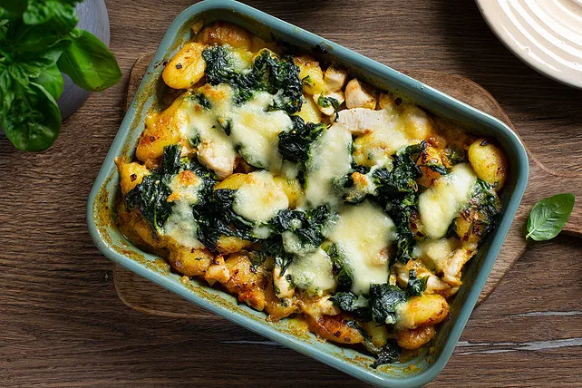

Gnocchi-Spinat-Auflauf mit Hähnchen und Curry
Zutaten
| 500 g | frische Gnocchi |
| 1 | Zwiebeln |
| 300 g | Hähnchenfleisch |
| 200 g | Blattspinat |
| 200 g | Sahne |
| 200 ml | Gemüsebrühe |
| 1 | Mozzarella |
| Salz und Pfeffer | |
| rotes Thai Currypulver |
Zubereitung
- Zwiebel schälen und fein würfeln. Hähnchen- oder Putenfleisch in kleine Stücke schneiden. Blattspinat auftauen lassen und gut abtropfen.
- Den Backofen auf 180°C (Ober-/Unterhitze) vorheizen.
- Eine Pfanne mit etwas Öl erhitzen. Das Fleisch darin scharf anbraten, bis es goldbraun ist. Mit Salz und Pfeffer würzen. Fleisch aus der Pfanne nehmen und beiseite stellen.
- In derselben Pfanne die Zwiebelwürfel anbraten, bis sie glasig sind. Den aufgetauten und abgetropften Blattspinat hinzufügen und kurz mitbraten.
- Die Sahne und die Gemüsebrühe in die Pfanne zu den Zwiebeln und dem Spinat gießen. Mit Salz, Pfeffer und einer Prise rotem Thai-Currypulver abschmecken. Kurz aufkochen lassen und dann vom Herd nehmen.
- Die Gnocchi und die gebratenen Fleischstücke in eine Auflaufform geben. Die vorbereitete Sauce darüber gießen und alles gut vermengen.
- Die Mozzarellakugel in dünne Scheiben schneiden oder grob zerzupfen. Den Mozzarella gleichmäßig über den Auflauf verteilen.
- Die Auflaufform in den vorgeheizten Ofen stellen und für etwa 20-25 Minuten backen, bis der Mozzarella goldbraun und geschmolzen ist.
- Den Auflauf aus dem Ofen nehmen und kurz abkühlen lassen. Heiß servieren und genießen.